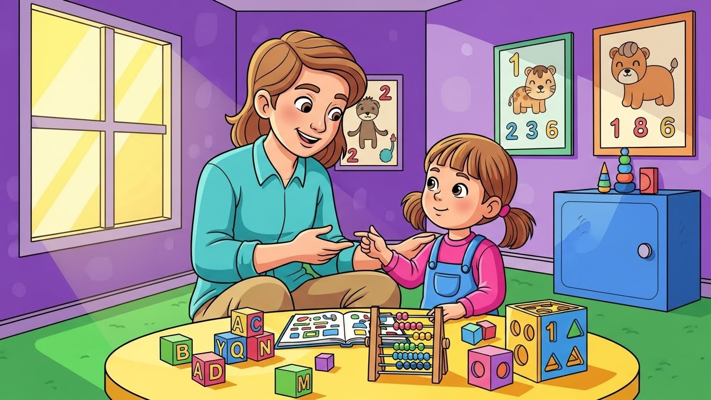

Terapias e Abordagens
Terapias e Abordagens
28 de novembro de 2025

Quando uma família recebe o diagnóstico de autismo, uma das primeiras buscas no Google é sempre a mesma: TERAPIA ABA.
E junto dessa busca, surge um mar de informações, opiniões, relatos pessoais, críticas, defesas apaixonadas, mitos, crenças e confusões que só aumentam a ansiedade de quem já está emocionalmente sobrecarregado.
No meio desse ruído, a pergunta que todo pai e toda mãe fazem é simples e urgente:
“Afinal… o que realmente funciona para transformar o comportamento do meu filho?”
É aqui que este artigo começa.
No HD 360 Moinhos, hoje localizado na Rua Quintino Bocaiúva, 451, Moinhos de Vento, Porto Alegre, nós vemos diariamente o impacto da TERAPIA ABA bem aplicada, moderna, acolhedora e completamente individualizada.
Mas também vemos o estrago que informações distorcidas fazem nas famílias.
Por isso, hoje vamos fazer algo essencial:
👉 destruir todos os mitos
👉 explicar as verdades como elas realmente são
👉 mostrar por que a ABA transforma vidas
👉 e por que ela continua sendo a intervenção mais sólida para o TEA no mundo
Tudo isso com profundidade, acolhimento e clareza.
Sem extremismos.
Sem promessas mágicas.
Sem frases prontas.
Apenas ciência, experiência real e amor pelas famílias.
Esse talvez seja o mito mais cruel, porque ele nasce do medo das famílias e de práticas ultrapassadas, de mais de 40 anos atrás.
A ABA moderna é viva, flexível, sensível e profundamente humana.
Hoje, ABA significa:
No HD 360 Moinhos, nenhuma criança repete comandos sem sentido.
Nenhuma criança treina respostas mecânicas.
Nenhuma criança perde sua essência.
O objetivo da ABA nunca foi “corrigir a criança”.
O objetivo é ajudar a criança a acessar o mundo, e ajudar o mundo a acessá-la também.
Esse mito vem de práticas arcaicas, que não representam a ABA atual.
A ABA moderna usa reforço positivo, não punição.
Isso significa:
Na prática, a criança se sente:
✔ mais segura
✔ mais confiante
✔ mais conectada
✔ mais feliz
A ABA moderna acolhe.
Não assusta.
Não pressiona.
Não força.
Este mito cai imediatamente quando você vê uma sessão real.
Nenhuma sessão é igual a outra.
Cada plano terapêutico é:
No HD 360 Moinhos, a criança nunca entra em uma sala “para ser moldada”.
É a terapia que se molda à criança.
Acreditar nisso é perder 80% da potência da intervenção.
A ABA atua em todas estas áreas:
Em outras palavras:
ABA não muda só o comportamento, ela muda a vida.
ABA é a terapia com maior evidência científica do mundo para autismo.
Cinco décadas de pesquisas.
Milhares de estudos.
Gerações de aprimoramento.
É moderna.
É atual.
E continua evoluindo.
Criança não aprende por acaso.
Aprende por motivação, estímulo, vínculo e repetição significativa.
A ABA descobre:
Quando você entende como a criança aprende, você finalmente consegue ensinar de forma que ela absorva.
É aí que a mágica acontece.
Comunicar não é apenas falar.
É olhar, apontar, pedir, expressar, rejeitar, escolher, interagir.
A ABA trabalha:
Famílias sempre dizem a mesma frase após algumas semanas:
“Meu filho finalmente está conseguindo me mostrar o que sente.”
Toda crise tem uma história.
Nada acontece por acaso.
ABA identifica:
Quando você entende a causa…
Você resolve o comportamento.
Crise não se combate.
Se acolhe.
Se reorganiza.
Se previne.
Autonomia não é feita de grandes saltos.
É feita de pequenos passos:
Cada conquista parece simples…
Mas, para a família, muda tudo.
A transformação acontece quando juntamos:
É isso que dá resultado.
E é exatamente isso que fazemos no HD 360 Moinhos.
Porque aqui, a ABA não é só técnica:
É amor.
É ciência.
É evolução.
É respeito à infância e à neurodiversidade.
Somos referência porque:
E fazemos isso no coração do Moinhos de Vento:
📍 Rua Quintino Bocaiúva, 451, Porto Alegre